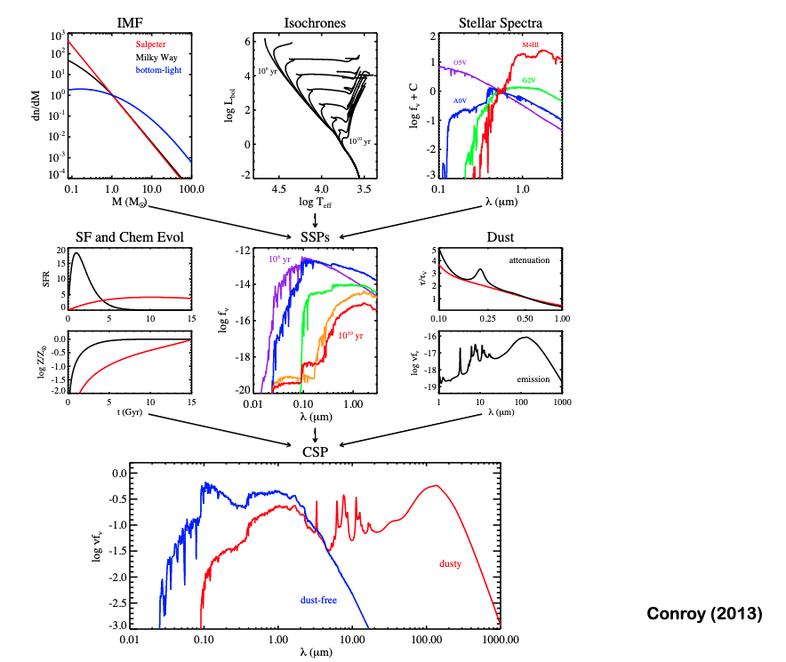
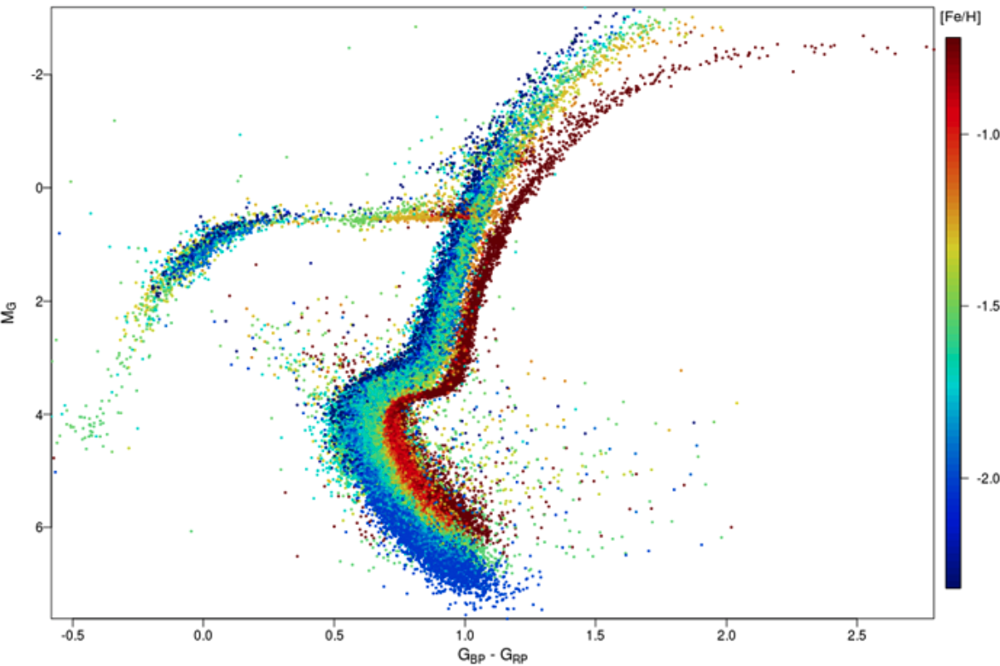
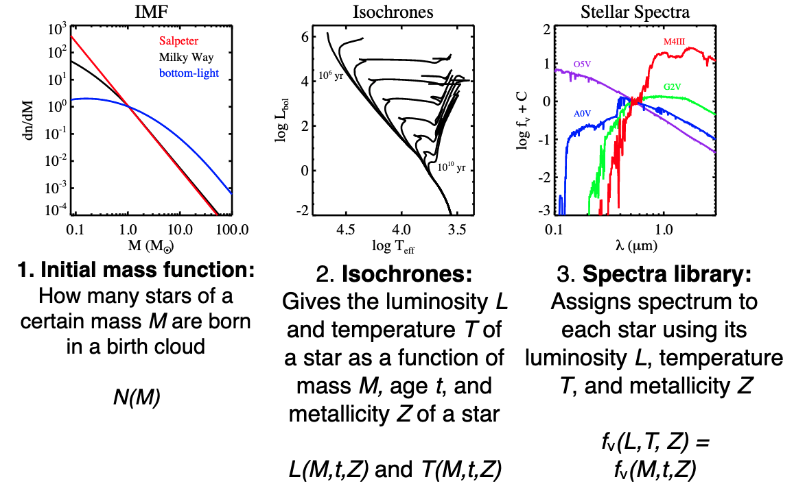
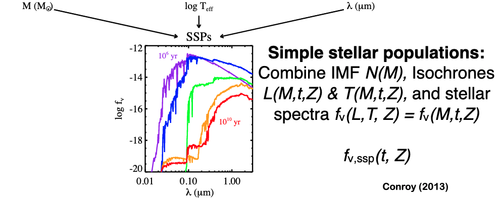
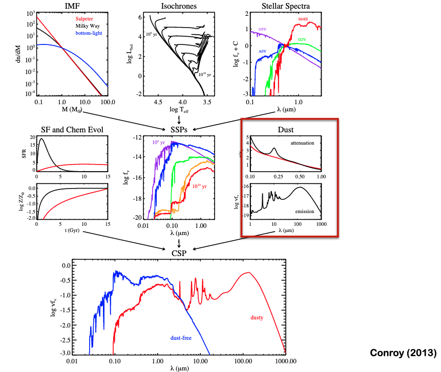

Stellar Populations and Modeling
Contents
4. Stellar Populations and Modeling¶
{kind=link}
4.1. Stellar Evolution Review¶
{kind=link}
Stars spend most of their life on the MS, defined as hydrogen core burning.
Thus, there is a unique radius for each star along the main sequence. We infer a readius via the Stefan-Boltzmann law. We measure a luminosity \(L=4\pi F d^2\) and temperature from spectra or colors: \(L = 4\pi R^2 \sigma T^4\).
On the MS, \(L\sim M^{3.5}\) or so.
More massive stars are in the upper-left, less massive in the bottom right. Radius increase upward and rightward.
Main sequence stars are chemically homogeneous and are in hydrostatic equilibrium.
Energy Transport
Low mass stars have convective exteriors, whereas high mass stars have convection in the core.
Chemical Composition
For the same mass, higher metallicity stars have slightly lower \(T\) and \(L\).
Pop I stars: Relatively rich in heavy elements
Pop II stars: Relatively poor in heavy elements
Pop III: Metal free
Post Main Sequence Evolution
Hydrogen stops burning, but temperature is not hot enough for He burning. Thus the core contracts and heats. Outer hydrogen burning begins.
Core continues to contract until H burns furiously. Luminosity increases rapidly and you have lots of mass loss. Core contracts as more Helium is dumped to the core.
H shell burning continues until \(10^{8}\) K, at which point Helium can start burning and the He flash occurs giving huge burst of energy.
Core expands, gravity weakens, and energy production decreases.
Star settles onto the Horizontal branch, characterized by He core burning and H shell burning via CNO cycle.
After you establish a CO core, you can’t burn, and the core contracts and heats. Stars move up the asymoptotic giant branch, experiencing significant mass loss.
AGB stars have a double shell burning phase, with H burning outside of He burning shells and a CO core.
Very massive stars can continue this to iron production, but no longer becuase that is the peak of BE/nucleon. Leads to stellar death, whereas low mass stars go planetary nebular after the double-shell burning phase.
{kind=link}
4.2. Simple Stellar Population Sythesis¶
4.2.1. Ingredients¶
 {kind=link}
{kind=link}
Initial mass function: How many stars of a certain mass \(M\) are born in a birth cloud \(N(M)\)?
Isochrones: Gives the luminosity \(L\) and temperature \(T\) of a star as a fucntion of mass \(M\) , age \(t\) , and metallicity \(Z\).
Spectral library: Assigns a spectrum to each star using its luminosity \(L\), temperature \(T\), and metallicity \(Z\).
A simple stellar population combines these to give template spectra.
4.2.2. Initial Mass Function¶
This is the distribution of mass at birth, which makes it difficult to measure.
The Salpeter IMF is a power law:
{kind=link}
Salpeter IMF
or
Some other valuable things to know:
Total Mass for a given IMF: \(M_{\star}=\int_{m_{1}}^{m_{2}} m \xi(m) \mathrm{d} m\)
Total luminosity for a given IMF: \(L_{\star}=\int_{m_{1}}^{m_{2}} L(m) \xi(m) \mathrm{d} m\)
Main sequence lifetimes: \(\tau =10^{10} \frac{M}{L}\)
Star formation rate: \(\mathrm{SFR}=\frac{\mathrm{d} M}{\mathrm{~d} t}=\dot{M}\)
For example, a \(\tau\)-model has: \(\frac{\mathrm{d} M}{\mathrm{~d} t}=C e^{-t / \tau}\)
4.2.3. Isochrones¶
Given a set of stars from an IMF, we can assign a temperature \(T\) and luminsoity \(L\) at time \(t\) making an isochrone:
{kind=link}
These temperatures and luminosities will set the spectrum of the stars. For each spectral type, we have a model spectrum.
Galaxies become redder and fainter over time.
Young populations luminosity is dominated by few high mass stars.
Intermediate age populations are dominated by intermediate mass stars.
Old populations have red stars which dominate the light.
{kind=link}
{kind=link}
{kind=link}
4.3. Complex Stellar Populations¶
{kind=link}
We can add a bit more information to our SSP to make it a CSP. Namely, we can add dust effects as well as a star formation history and chemical evolution.
4.3.1. Dust Attenuation¶
We want to be able to describe the absorption and re-emission of light from stars via dust.
The cross section / optical depth at bluer wavelengths is larger than at redder wavelengths, in general.
For starburst galaxies, we have the Calzetti law in black. The MW attenuation curve is in dotted lines.
Note that the axes are such that \(A(\lambda) = \Delta m_\lambda\) which can also be written as \(A_\lambda = 1.086 \tau_\lambda\).
It is common to talk about color excess: \(E(B-V) = A_B - A_V\).
This gives the attenuation law: \(R_\lambda = \frac{A_\lambda}{E(B-\lambda)}\). For the Milky Way, \(R_V \sim 3.1\) is the slope of the attenuation curves below.
{kind=link}
Dust reddens the spectrum, with the lost UV-optical emission being re-radiated at FIR wavelength as thermal emission by dust with \(T\sim 30\) K. ‘
{kind=link}
4.3.2. Dust Emission¶
You can see the various processes which affect dust emission below.
Note that the features at 10 micron are from polycyclic aromatic hydrocarbons produced in high mass stars.
{kind=link}
4.3.3. Star Formation Histories¶
Consider the SFH of a simulated galaxy. Broadly, star formation rises rapidly, peaks near \(z\sim 1\) and then declines towards the present. There are wiggles over time, too, which might be bursty events.
The increase in metallicity with time depends on the star formation history.
Note that star forming galaxies have spectra which are dominated by the main sequence. IN a rising history, the spectra are dominated by young blue stars.
Even though \(M>60 M_\odot\) stars are luminous, they are quite rare. Star forming galaxy spectra are typically characterized by \(M>20 M_\odot\) stars.
{kind=link}
We usually parametrize star formation histories with smooth functions. Some examples are:
{kind=link}
Falling Star Formation History/Exponential Decay
Delayed Exponential
Rising SFH
Rising \(\tau\)
A valuable thing to see are the fractional contributions to the spectra for various histories:
{kind=link}
{kind=link}
{kind=link}
4.5. Fitting Broadband Photometry (SEDs)¶
A classic problem you run into when doing SED modeling is the degeneracy between age and dust. You need long wavelength information to break this degeneracy.
{kind=link}
{kind=link}
4.6. Challenges to SED Modeling¶
Degeneracies between age and metallicity.
SPS models are not perfect, and various stages of stellar evolution are still not well understood (AGB phase, for example)
Dust-law, initial mass function, and star formation history typically have to be assumed
Massive stars with low mass-to-light will dominate the spectra